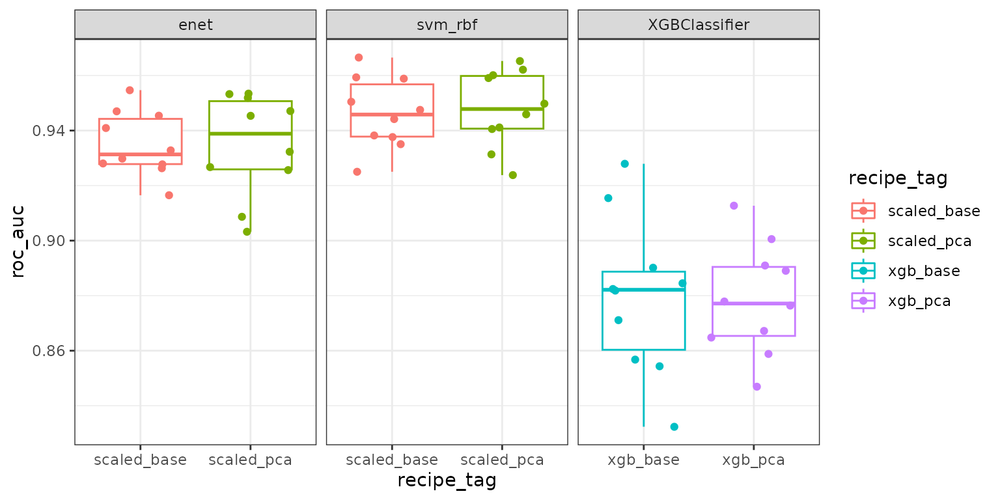

rpwf
rpwf.RmdIntroduction
- I wrote this package because I want to wrangle data in R, i.e.,
using data.table,
tidymodels, tidyverse, spline basis functions
generations with mgcv/gratia, and
visualization with ggplot2
to name a few.
- Importantly,mice and missForest
in R are powerful imputation methods.
- Importantly,mice and missForest
in R are powerful imputation methods.
- Meanwhile, the ML and DL ecosystems in python are usually more
mature, flexible, and many latest updates and ML research papers have
python implementations.
- I find that fitting model in python is usually faster and consume
less memory for the equivalent model in R, possibly due to
numpyand bleeding edge implementations.
- I find that fitting model in python is usually faster and consume
less memory for the equivalent model in R, possibly due to
-
rpwf allows wrangling data in R while having access
to the latest and greatest ML packages in python.
- In Kaggle competitions, it is usually feature engineering that gives
a competitor an edge. rpwf helps by
- Enabling the use of the workflowset framework.
Workflow sets are pre-defined test experiments that test how engineered
features affect predictive performance.
- Allowing seamless deployment on HPC clusters or cloud computers because the pathing and uploading of results is handled by (a) SQLite database(s) and the pins package.
- Enabling the use of the workflowset framework.
Workflow sets are pre-defined test experiments that test how engineered
features affect predictive performance.
Demonstration
- Let’s demonstrate using the
sim_classification()function from modeldata.
set.seed(123)
tmp_dir <- tempdir() # Temp folder
df <- modeldata::sim_classification(num_samples = 500, num_linear = 40)
df[1:6, 1:6]
#> # A tibble: 6 × 6
#> class two_factor_1 two_factor_2 non_linear_1 non_linear_2 non_linear_3
#> <fct> <dbl> <dbl> <dbl> <dbl> <dbl>
#> 1 class_2 -0.364 -1.08 -0.681 0.854 0.206
#> 2 class_2 0.292 -0.884 -0.711 0.666 0.943
#> 3 class_1 1.39 2.61 -0.702 0.733 0.379
#> 4 class_2 -0.354 0.535 0.0289 0.315 0.626
#> 5 class_2 1.06 -0.727 -0.0143 0.668 0.184
#> 6 class_1 2.26 2.15 0.233 0.464 0.659- Data is balanced.
table(df$class)
#>
#> class_1 class_2
#> 228 272- There’s no missing data.
- Re-code classes, our response variable, as integers
df$class <- as.integer(df$class) - 1L- Add an optional id column
Initialize a database
- Create a
pins::board_<your board type>and pass it torpwf_connect_db().
- Create a database called
"db.SQLite"withrpwf_connect_db().
board <- board_temp()
db_con <- rpwf_connect_db(paste(tmp_dir, "db.SQLite", sep = "/"), board)-
db_conis an object that holds a DBI connection to the SQLite database that was just created. Access it withdb_con$con.
db_con$con
# Path: <path>/rpwfDb/db.SQLite
# Extensions: TRUEDefine models with parsnip
- Identical to
{parsnips}, first choose a model, i.e.,boost_tree(), then choose the R engine withset_engine()and classification or regression withset_mode().
- Then, pipe the object into the
set_py_engine()function.
-
set_py_engine()has 3 important arguments-
py_moduleandpy_base_learnerdefines how to import a base learner in a python script.
-
argsdefines the arguments that can be passed to the base learner in python.
-
tagis an optional argument that’s helpful for keeping track of models.
-
- Check the available models with
rpwf_avail_models()and add another model withrpwf_add_py_model().
rpwf_avail_models(db_con)
#> py_module py_base_learner r_engine model_mode
#> 1 sklearn.linear_model LogisticRegression glmnet classification
#> 2 sklearn.linear_model ElasticNet glmnet regression
#> 3 sklearn.svm SVC kernlab classification
#> 4 sklearn.svm SVR kernlab regression
#> 5 xgboost XGBClassifier xgboost classification
xgboost
- I fix the
n_estimatorsat 50 and tune the learning rate. Other arguments can be found at the xgboost docs, - To do this, I pass the parameter
n_estimators = 50to theargsargument ofset_py_engine().
- I am going to tune 6 hyper parameters by passing them the
tune()functions just like in{parsnips}.
# This model is equivalent to the following python codes:
# from xgboost import XGBClassifier
#
# base_learner = XGBClassifier(
# eval_metric = "logloss",
# use_label_encoder = False,
# verbosity = 0,
# silent = True
# )
xgb_model <- boost_tree(
mtry = tune(),
min_n = tune(),
tree_depth = tune(),
learn_rate = tune(),
loss_reduction = tune(),
sample_size = tune()
) |>
set_engine("xgboost") |>
set_mode("classification") |>
set_py_engine(
"xgboost",
"XGBClassifier",
rpwf_model_tag = "xgboost",
eval_metric = "logloss",
n_estimators = 50,
use_label_encoder = FALSE,
verbosity = 0,
silent = TRUE
)
svm
- From the sklearn.svm.SCV
docs, the argument
cache_sizecan help speed up model fitting if memory is available. I will increase this from the default value. This is an example of how fitting models in python can have some very useful settings.- In this example,
cache_sizewouldn’t reduce fit time because the data is small.
- In this example,
- Let’s set up a radial basis kernel svm model.
- I have to fix the
kernelargument inargstorbf. - This is because tidymodels defines
svm_poly()andsvm_rbf()separately for polynomial basis svm and radial basis svm while sci-kit learn defines them both withsklearn.svm.SVC.
- I have to fix the
svm_rbf_model <- svm_rbf(
cost = tune(),
rbf_sigma = tune()
) |>
set_engine("kernlab") |>
set_mode("classification") |>
set_py_engine(
"sklearn.svm",
"SVC",
rpwf_model_tag = "svm_rbf",
kernel = "rbf", # fix kernel parameter = "rbf"
cache_size = 500
)
glm
- Let’s also fit an elastic net model.
enet_model <- logistic_reg(
penalty = tune(),
mixture = tune()
) |>
set_engine("glmnet") |>
set_mode("classification") |>
set_py_engine(
"sklearn.linear_model",
"LogisticRegression",
rpwf_model_tag = "glmnet",
solver = "saga",
penalty = "elasticnet",
max_iter = 1000
)Hyper parameter tuning
- The dials package provides
- sensible hyper parameters ranges, and
- functions that go beyond the random grid and regular grid such as
dials::grid_max_entropy, anddials::grid_latin_hypercube.
- sensible hyper parameters ranges, and
-
dials::grid_latin_hypercubewill be helpful for models with a lot of hyper parameters such asxgboost. But forsvm_rbf_model, tuning just 2 hyper parameters on a 2-D grid withdials::grid_regularwould provide sufficient coverage of the hyper parameter space at an acceptable speed.
- Updating the range of the hyper parameter space is similar to how it works
in dials. Just provide the tuning functions (or create
new ones) to the
.model_update_paramsargument.
-
Models specific tuning grids can be added at this
step with
set_r_grid().
xgboost
- For the
xgboost_model, let’s use adials::grid_latin_hypercube.
- Let’s limit
max_depth. To do this, I add a named list to the.model_update_paramsargument.
xgb_model <- xgb_model |>
set_r_grid(
.model_grid_fun = dials::grid_latin_hypercube,
.model_update_params = list(tree_depth = dials::tree_depth(range(2, 5))),
size = 100
)
svm
- For the
svm_rbf_model, let’s use a 2D regular grid.
svm_rbf_model <- svm_rbf_model |>
set_r_grid(dials::grid_regular, levels = 10)
glm
- Let’s also use a 2D regular grid for the enet model. However, I changed the range of the l1 penalty to allows for a greater regularization strength since scikit-learn inverse the penalty value for the logistic regression implementation.
enet_model <- enet_model |>
set_r_grid(dials::grid_regular,
list(penalty = dials::penalty(range = c(-8, 0.5))),
levels = 10
)Define transformation pipelines with recipes
- Recipes are defined as usual.
- Use the formula or the role interface to specify the response and
predictors.
- The base recipe is used to gauge the baseline performance of each
model.
- The pca recipe is used to de-correlate the variables.
step_pca()conveniently provides an argument to keep an arbitrary threshold of the variance explained. I choose 95%.
- Use the formula or the role interface to specify the response and
predictors.
-
rpwfreserves one optional special role that can be used with theupdate_role()function:-
pd.indexis a special role. It will mark a column for conversion into a pandas index in python.
- Below, the column
df$idwill become thepandas.DataFrameindex.
-
- Pipe a recipe into
rpwf_tag_recipe()to add a description to the recipe.
common <- recipe(class ~ ., data = df) |>
step_mutate(class = as.integer(class)) |>
update_role(id, new_role = "pd.index")
### xgb recipes
xgb_base_rec <- common |>
rpwf_tag_recipe("xgb_base")
xgb_pca_rec <- xgb_base_rec |>
step_normalize(all_numeric_predictors()) |>
step_pca(threshold = .95) |>
rpwf_tag_recipe("xgb_pca")
### glm and svm recipes
scaled_base_rec <- common |>
step_normalize(all_numeric_predictors()) |>
rpwf_tag_recipe("scaled_base")
scaled_pca_rec <- scaled_base_rec |>
step_pca(threshold = .95) |>
rpwf_tag_recipe("scaled_pca")Create workflowsets
rpwf_workflow_set()
- The function
rpwf_workflow_set()mimicsworkflowsets::workflow_set(). It creates a combination of all the provided recipes and models. Then, one can work with the resulting data.frame just like any data.frame (e.g., filtering out redundant workflows and etc.). - One
workflow_setforxgboostand one forsvmandglmare created andrbind()into one finalworkflow_set.
- The
costargument is to specify which measure of predictive performance is optimized for. Look up the values in the scikit-learn docs. Custom cost functions are possible but would require coding on the python side.
### xgboost workflow_set
xgb_wfs <- rpwf_workflow_set(
preprocs = list(xgb_base_rec, xgb_pca_rec),
models = list(xgb_model),
cost = "roc_auc"
)
### svm and glm workflow_set
svm_glm_wfs <- rpwf_workflow_set(
preprocs = list(scaled_base_rec, scaled_pca_rec),
models = list(svm_rbf_model, enet_model),
cost = "roc_auc"
)
### combined workflow_set
all_wfs <- rbind(xgb_wfs, svm_glm_wfs)
rpwf_augment()
-
rpwf_augment()is a wrapper function for many tasks. But most importantly, it generates the hyper parameter grids in R and transform these grids to make them compatible with sklearn’s API. For example the following conversions were done:- The
mtrypositive integer in R is converted into sklearn’scolsample_bytreepositive proportions.
- The
penaltyin R is reciprocated in sklearn. This is why in order to have the l1 penalty > 1 (which is too large most of the time), the range upper bound is changed to be positive and smaller than 1.
- The
all_wfs <- rpwf_augment(all_wfs, db_con)
all_wfs |>
dplyr::select(model_tag, recipe_tag, costs)
#> # A tibble: 6 × 3
#> model_tag recipe_tag costs
#> <chr> <chr> <chr>
#> 1 xgboost xgb_base roc_auc
#> 2 xgboost xgb_pca roc_auc
#> 3 svm_rbf scaled_base roc_auc
#> 4 glmnet scaled_base roc_auc
#> 5 svm_rbf scaled_pca roc_auc
#> 6 glmnet scaled_pca roc_auc- Checking the generated grids, we can see that the names of the hyper parameters have been renamed to conform to the scikit-learn API.
sapply(unique(all_wfs$grids), head)
#> [[1]]
#> # A tibble: 6 × 6
#> colsample_bytree min_child_weight max_depth learning_rate gamma subsa…¹
#> <dbl> <int> <int> <dbl> <dbl> <dbl>
#> 1 0.533 7 5 0.00437 2.51e-2 0.478
#> 2 0.244 31 4 0.191 1.69e-9 0.835
#> 3 0.511 7 4 0.260 2.23e-8 0.996
#> 4 0.733 20 2 0.0257 5.94e-4 0.225
#> 5 0.711 32 4 0.00658 1.46e+0 0.309
#> 6 0.911 3 4 0.00111 9.41e-7 0.642
#> # … with abbreviated variable name ¹subsample
#>
#> [[2]]
#> # A tibble: 6 × 2
#> C gamma
#> <dbl> <dbl>
#> 1 1024 0.00862
#> 2 323. 0.00862
#> 3 102. 0.00862
#> 4 32 0.00862
#> 5 10.1 0.00862
#> 6 3.17 0.00862
#>
#> [[3]]
#> # A tibble: 6 × 2
#> C l1_ratio
#> <dbl> <dbl>
#> 1 100000000 0.05
#> 2 11364637. 0.05
#> 3 1291550. 0.05
#> 4 146780. 0.05
#> 5 16681. 0.05
#> 6 1896. 0.05- Here are the dimensions of the grids. This is always good to check to make sure we didn’t accidentally make a grid that’s too big.
Export data as parquets and add to database.
- There are two types of parquets files 1) hyper param grids, and 2)
train/test data.
-
rpwf_write_grid()andrpwf_write_df()write the parquets.
- Because this function only generate a data.frame if its not already
written, running each of these functions in parallel is not recommended.
- To get around this, one can either work with a manageable number of workflows at a time, or split the work into multiple different databases and run the export functions in parallel over the databases.
rpwf_write_grid(all_wfs)
rpwf_write_df(all_wfs)- Export the board information as a YAML file.
- Then finally, export the meta data into the database with
rpwf_export_db().
rpwf_write_board_yaml(board, paste(tmp_dir, "board.yml", sep = "/"))
rpwf_export_db(all_wfs, db_con)
#> [1] 6Run the workflow in python
- The
rpwfpython codes contains scripts that performs model fitting. These are also templates to experiment further using the data generated in R.
- For example, to use the
nested_resampling.pyscript, in the terminal, run the following command to get the list of arguments
python -m rpwf.script.nested_resampling -h- Or the following in a Jupyter notebook cell
%run -m rpwf.script.nested_resampling -h- This following command display the workflows we exported.
%run -m rpwf.script.nested_resampling $<path to the db> -b $<path to board yaml> -s- The positional argument is the path to the database.
- The
-bflag is the path to the exported board YAML file associated with this db.
- The
-sflag shows the workflows present in the database.
- The other important flags are
- The
-aflag runs all the workflow that hasn’t been run.
- The
-wflag accept a list of ids (i.e., 1 2 3 4) to specify which workflow to run.
- The
-fflag force a run and overwrite the results of a workflow that has already been run.
- The
-cflag indicates the number of CPU cores dedicated to the model fitting task.
- The
-icvand-icrflags are number of vfold-cv and repats for the inner loop used for hyper parameters tuning.
- The
-ocvand-ocrflags are number of vfold-cv and repats for the outer loop used for testing the predictive performance.
- The
- Let’s run the nested CV with 5 CV * 2 repeats for the inner loop and 5 CV * 2 repeats on the outer loop.
%run -m rpwf.script.nested_resampling $<path to the db> -b $<path to board yaml> \
-a -c 7 -icv 5 -icr 2 -ocv 5 -ocr 2Visualize the results
- Results can be imported back into R by passing the
db_conobject torpwf_results().
fit_results <- rpwf_results(db_con)- We can now just manipulate the results with R.
fit_results |>
tidyr::unnest(fit_results) |>
ggplot(aes(y = roc_auc, x = recipe_tag, color = recipe_tag)) +
geom_boxplot() +
geom_jitter() +
facet_wrap(~model_tag, scale = "free_x") +
theme_bw()